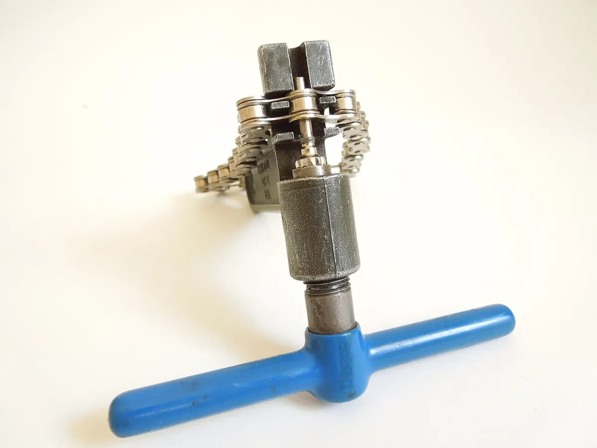

Трансмиссия
Цепь
Chain
Роликовая цепь, передающая вращение со звезды на заднее колесо.
Шаг велосипедной цепи — 1/2" (12,7 мм). Ширина зависит от числа скоростей: для односкоростных и планетарных втулок — 1/8", для систем с переключателями — 3/32" и более узкие цепи для 9, 10, 11, 12 скоростей.
Цепь растягивается из-за износа шарниров; её проверяют калибром и вовремя меняют, иначе изнашиваются кассета и звёзды. Соединяется цепь замком (master link) или специальным соединительным пином.
Факты и стандарты
- Шаг: 12,7 мм (1/2")
- Обычно меняют при растяжении 0,5% (11 скоростей и выше) — 0,75%
- Считать звенья: см. инструкцию по замене
